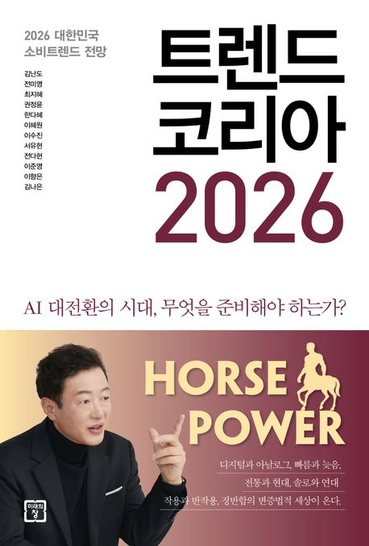

※ 책 표지 이미지 위치 (파일명: book-cover.jpg)

※ 책 표지 이미지 위치 (파일명: book-cover.jpg)
"사람들이 믿으면 그게 사실이 되는 거야. 팩트는 중요하지 않아."
이 소설은 어느 날 학교 건물 뒤 공터에서 여고생 ‘서은’이 시체로 발견되고, 둘도 없는 단짝 친구였던 ‘주연’이 가장 유력한 용의자로 체포되면서 시작되는 미스터리 스릴러이다.
가장 큰 문제는 용의자인 주연이가 그날의 일을 전혀 기억하지 못한다는 점이다. 주연이는 정말 가장 친밀했던 친구를 죽였을까?
이 책은 단순히 범인을 추리하는 이야기를 넘어, ‘우리가 진실이라고 믿는 것이 정말 진실일까?’라는 질문을 던진다. 각자의 입장에 따라 진실이 어떻게 왜곡되고 편집되는지, 사람들의 맹목적인 믿음이 얼마나 무서운지를 보여주는 몰입감 있는 작품이다.
이 책은 일반적인 ‘1장, 2장’ 형식이 아니라, 다양한 시점이 교차되는 독특한 전개 방식으로 진실을 추적한다.
| 제목 | 죽이고 싶은 아이 1 |
| 작가 | 이꽃님 |
| 장르 | 미스터리 스릴러 |
| 분위기 | 긴장감 있음, 몰입감 있음 |
| 추천 독자 | 추리소설을 좋아하는 사람, 진실과 기억을 다룬 이야기에 관심 있는 사람 |